Angoli arrotondati
Angoli arrotondati per i tuoi schermi.
Le migliori utility per il tuo Mac, in un unico posto.
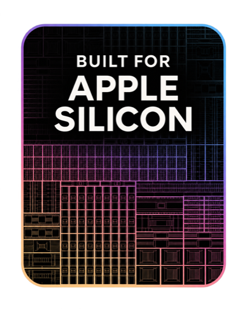
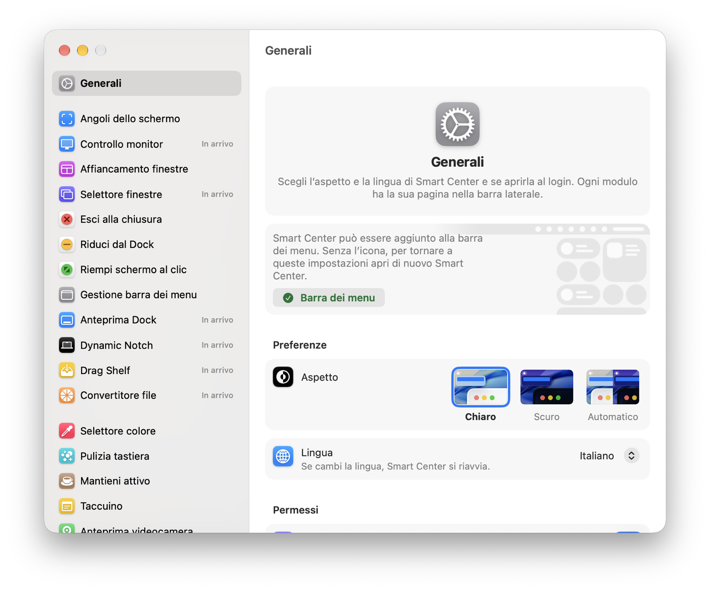
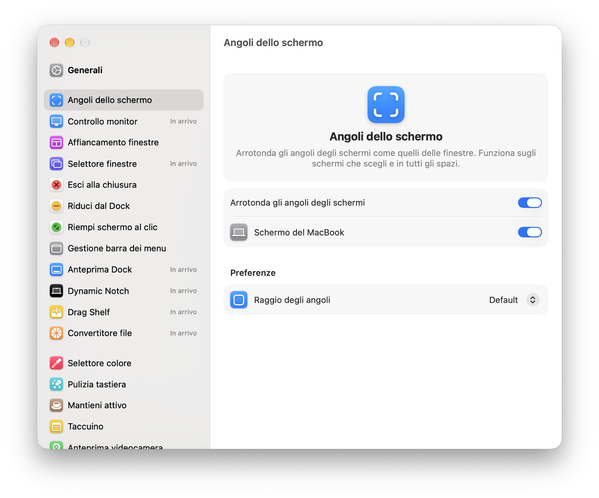
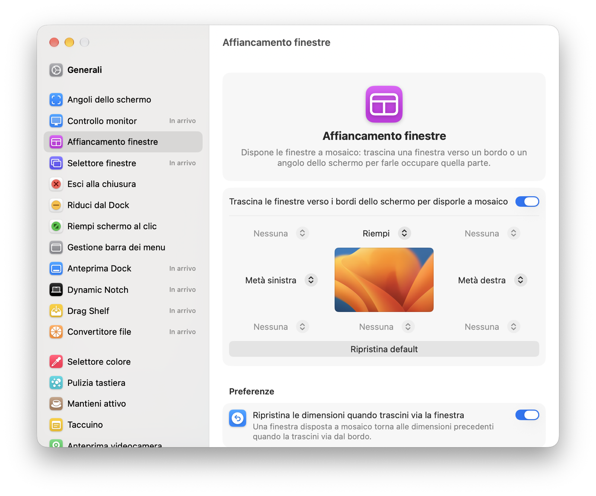
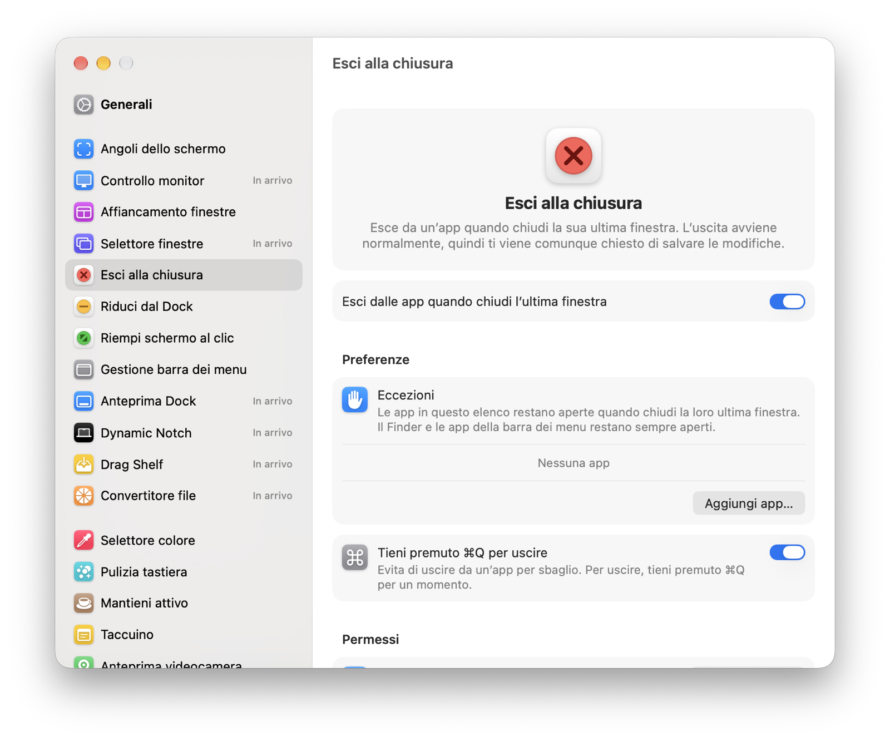
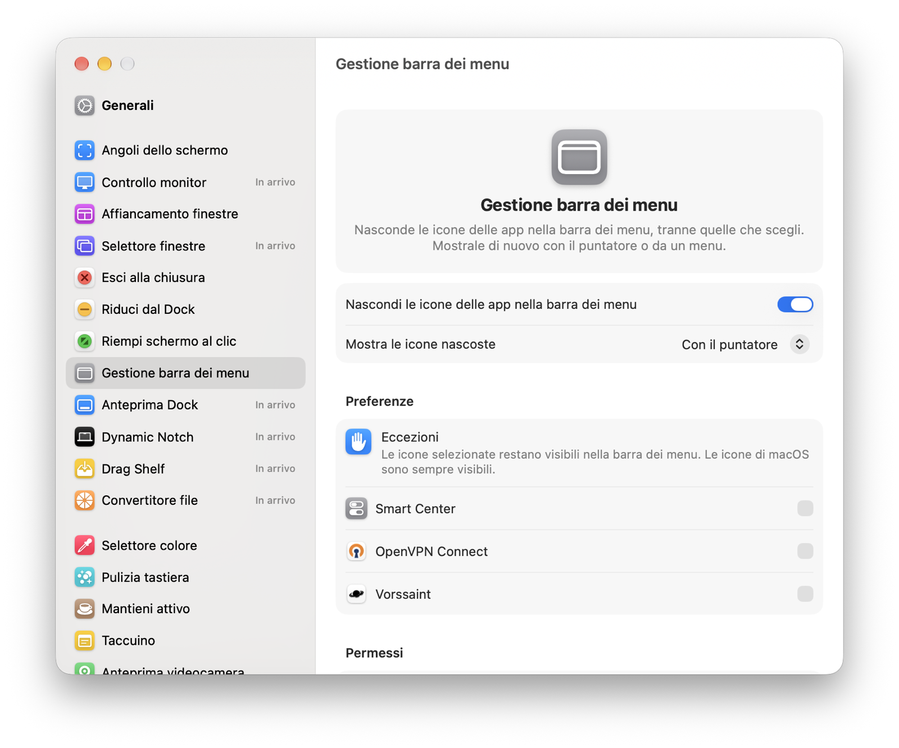
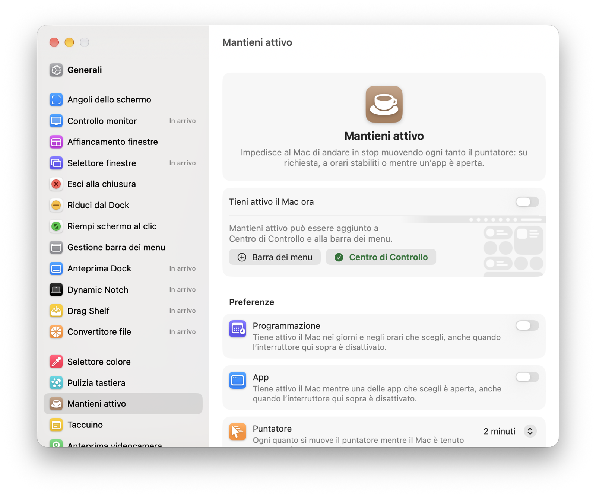
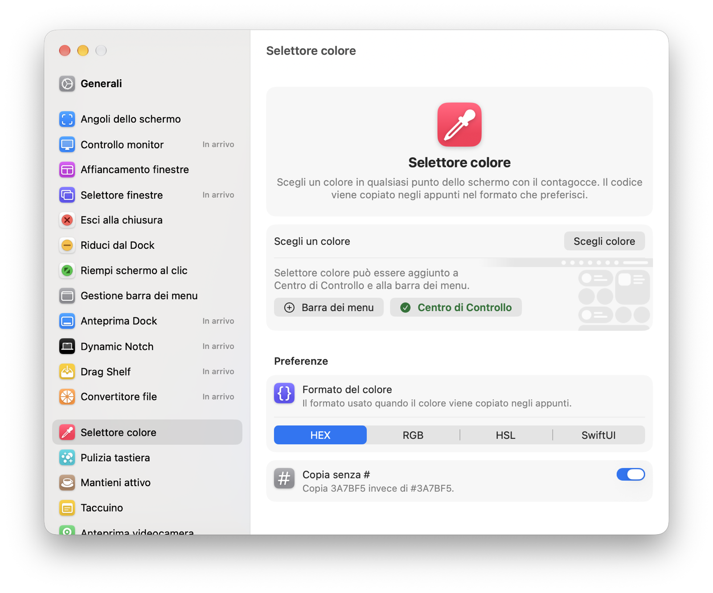
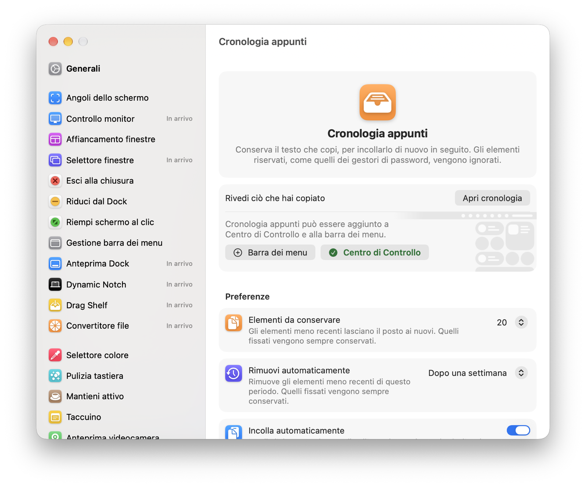
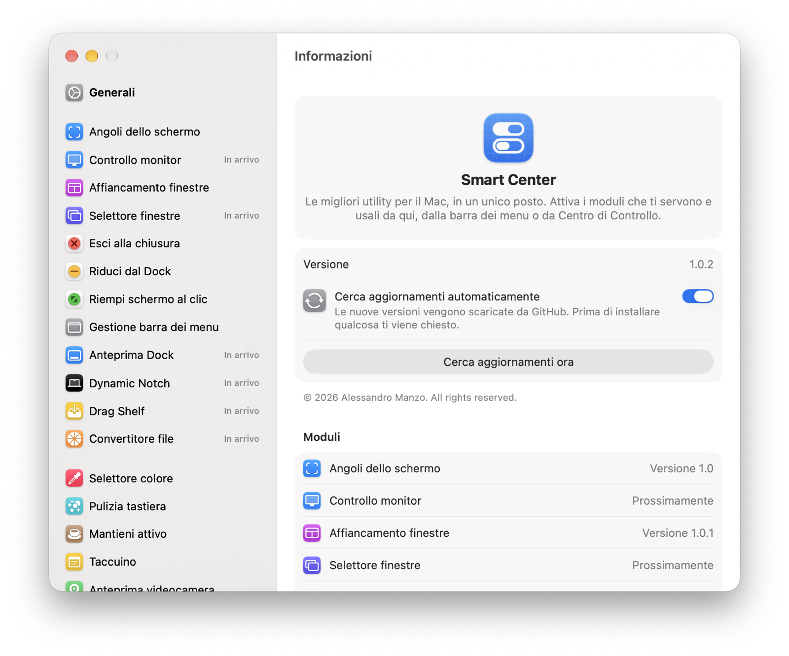
Attiva i moduli che vuoi e usali dalla barra dei menu o da Centro di Controllo.

Angoli arrotondati per i tuoi schermi.
Trascina una finestra verso un bordo per disporla a mosaico.
Le app si chiudono quando chiudi la loro ultima finestra.
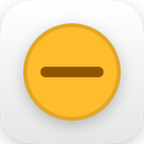
Fai clic sull’icona di un’app nel Dock per ridurla.

Il pulsante verde riempie lo schermo.

Nascondi le icone della barra dei menu che non ti servono.

Preleva qualsiasi colore sullo schermo.

Blocca la tastiera mentre la pulisci.

Impedisci al Mac di andare in stop.

Note rapide, sempre a portata di mano.
Controlla la fotocamera prima di una chiamata.
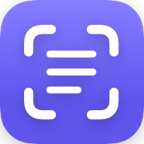
Copia il testo da qualsiasi punto dello schermo.

Incolla di nuovo ciò che hai copiato.

Tieni ciò che trascini e rilascialo dopo.
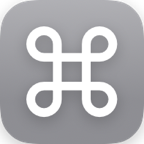
Scorciatoie per ogni modulo.
La luminosità di ogni monitor.

Passa da una finestra all’altra.
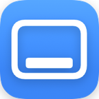
Vedi le finestre dal Dock.
Rendi utile il notch.
Converti i file trascinandoli.
Smart Center funziona solo sui Mac con Apple silicon, da M1 in poi. Non funziona sui Mac con processore Intel.
Smart Center non raccoglie, invia né condivide alcuna informazione.
Le tue note, il testo che copi e le tue impostazioni vengono salvati solo su questo Mac. Nessun account, nessuna statistica d’uso.
Ogni modulo chiede solo ciò che gli serve e puoi modificare i permessi in qualsiasi momento in Impostazioni di Sistema.
Verificata da Apple, così macOS la apre senza avvisi. Si collega a internet solo per cercare aggiornamenti.